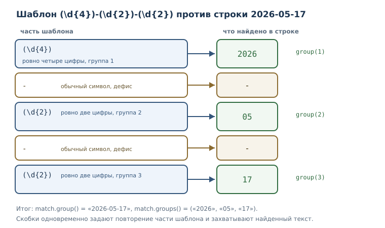
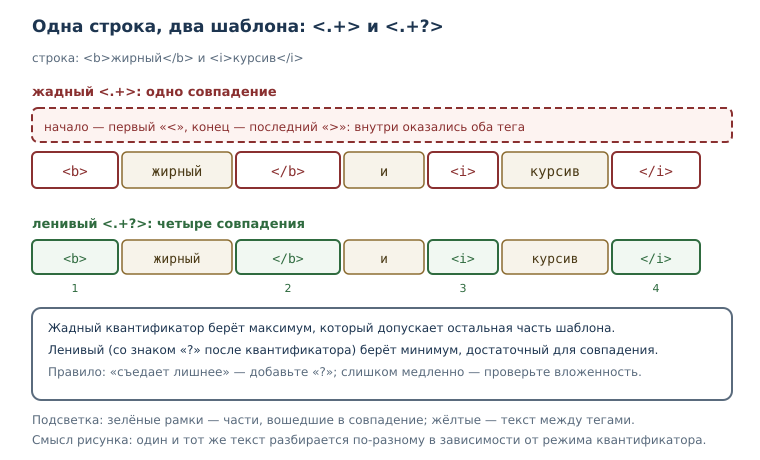

Регулярные выражения
Синтаксис, классы символов, квантификаторы, группы, жадность, флаги и практическая обработка текста средствами модуля re.
В этой главе
До сих пор работа с текстом опиралась на точные подстроки и методы строк:
найти "error", разбить по запятой, заменить слово. Этого достаточно, пока
известно точное содержимое. Но часто нужна не подстрока, а структура:
дата в формате «четыре цифры, дефис, две цифры, дефис, две цифры», номер
телефона, артикул из двух букв и четырёх цифр, строка журнала, начинающаяся
с отметки времени. Для таких задач и придуманы регулярные выражения
(regex) — шаблоны, описывающие не конкретный текст, а его форму.
Регулярные выражения — мощный инструмент и одновременно источник трудно читаемого кода. Поэтому в главе мы будем не только разбирать синтаксис, но и учиться вовремя останавливаться: если задачу решают строковые методы, лучше взять их.
51.1 Что вы сможете после этой главы
- писать шаблоны с классами символов, квантификаторами и якорями;
- извлекать части совпадения через группы, в том числе именованные;
- понимать разницу между жадным и ленивым сопоставлением;
- пользоваться функциями модуля
reи объектомMatch; - включать нужные флаги и объяснять, что они меняют;
- проверять форматы, разбирать строки журнала и делать замены по шаблону;
- узнавать задачи, где регулярные выражения — плохой выбор.
51.2 Зачем нужны регулярные выражения
Сравним две задачи. Первая — найти в тексте слово «кот». Здесь хватает
строкового метода. Вторая — найти все даты в формате 2026-05-17, где цифры
могут быть любыми. Перебирать все возможные даты бессмысленно: их слишком
много, а нужен шаблон «четыре цифры, дефис, две цифры, дефис, две цифры».
Регулярное выражение задаёт именно такой шаблон. В Python его компилирует и
исполняет модуль стандартной библиотеки re; сами шаблоны записывают
строками, обычно «сырыми» — о них ниже.
Правило выбора простое. Точная подстрока, фиксированный префикс или суффикс,
разбиение по одному символу — это строковые методы: in, startswith,
endswith, split, replace. Регулярное выражение нужно, когда важна
структура: повторы, классы символов, необязательные части, группы.
Начинающих обычно тянет решать шаблоном всё подряд; опытные разработчики
сначала спрашивают, хватит ли str.
51.3 Первый шаблон: поиск по структуре
Самая частая операция — найти первое совпадение. Функция re.search
возвращает объект Match или None.
import re
text = "заказ 42 от 2026-05-17"
match = re.search(r"\d+", text)
print(match.group())
print(match.start(), match.end())
42
6 8
Шаблон \d+ означает «одна или более цифр». search ищет совпадение в любом
месте строки, а Match хранит найденный фрагмент и его позицию: start и
end — индексы начала и конца. Метод group() возвращает сам текст
совпадения.
Обратите внимание на r перед строкой: r"\d+" — «сырая» строка, в которой
обратная косая черта не начинает escape-последовательность. Без r пришлось
бы писать "\\d+", и легко ошибиться. Сравните длину двух строк.
print(len("\b"))
print(len(r"\b"))
1
2
В обычной строке "\b" — один служебный символ (забой), а в сырой
r"\b" — два символа: обратная косая черта и b. Для шаблонов почти всегда
нужна сырая строка, иначе \b или \d превратятся не в то, что задумано
(подробнее — в главе о строках).
Три функции поиска различаются привязкой к началу строки.
import re
print(re.match(r"\d+", "заказ 42"))
print(bool(re.search(r"\d+", "заказ 42")))
print(bool(re.fullmatch(r"\d{4}", "2026")))
print(bool(re.fullmatch(r"\d{4}", "20261")))
None
True
True
False
re.match проверяет совпадение с начала строки, поэтому в «заказ 42» он
ничего не находит: строка начинается с буквы. re.search ищет в любом месте.
re.fullmatch требует, чтобы шаблон покрыл строку целиком, — это главный
инструмент проверки формата.
51.4 Классы символов
Класс символов — запись набора допустимых символов: [abc], [0-9],
\d, \w; внутри квадратных скобок действуют свои правила.
| Запись | Что означает |
|---|---|
[abc] |
любой из символов a, b, c |
[a-z] |
любая строчная латинская буква |
[^0-9] |
любой символ, кроме цифры |
\d |
цифра (то же, что [0-9]) |
\w |
буква, цифра или подчёркивание |
\s |
пробельный символ |
. |
любой символ, кроме перевода строки |
Заглавные варианты \D, \W, \S означают дополнение: «не цифра», «не
буква и не цифра», «не пробел».
import re
text = "abc 123 _-!"
print(re.findall(r"\w+", text))
print(re.findall(r"\d+", text))
print(re.findall(r"\s", text))
print(re.findall(r"[^0-9]+", "a1b22c"))
['abc', '123', '_']
['123']
[' ', ' ']
['a', 'b', 'c']
findall возвращает список всех совпадений; это удобнее search, когда
нужны все вхождения, а не первое. Обратите внимание: \w включает
подчёркивание, поэтому _ попало в первый результат.
Внутри квадратных скобок правила особые: квантификаторы не действуют, ^
в начале означает отрицание, а - задаёт диапазон. Если дефис нужен как
символ, его ставят в начало или конец класса.
Отдельная ловушка русскоязычных текстов: диапазон [а-я] не включает букву
ё, потому что она стоит в таблице символов отдельно.
import re
print(re.findall(r"[а-я]+", "кот пёс"))
print(re.findall(r"[а-яё]+", "кот пёс"))
['кот', 'п', 'с']
['кот', 'пёс']
Если текст бывает с ё, добавляйте её в класс явно. О кодировках и Unicode
рассказано в главе о строках.
51.5 Квантификаторы
Квантификатор — указание количества повторений: *, +, ?, {m,n}.
| Квантификатор | Сколько раз |
|---|---|
? |
ноль или один |
* |
ноль или больше |
+ |
один или больше |
{m} |
ровно m |
{m,} |
m или больше |
{m,n} |
от m до n |
import re
print(re.findall(r"a+", "aaa aa a"))
print(re.findall(r"a{2}", "aaa"))
print(re.findall(r"ab?c", "ac abc abbc"))
['aaa', 'aa', 'a']
['aa']
['ac', 'abc']
В последней строке b? означает «возможно, есть b», поэтому шаблон находит
ac и abc, а в abbc совпадением становится abc, начиная со второго
символа.
Квантификатор применяется к тому, что стоит перед ним: к символу, классу или группе. Если нужно повторить последовательность, её заключают в скобки — об этом следующий раздел.
51.6 Якоря и границы
Якоря не потребляют символы, а задают позицию. ^ требует начала строки,
$ — конца, \b — границы слова.
import re
text = "строка 1\nстрока 2"
print(re.findall(r"^строка", text))
print(re.findall(r"^строка", text, re.MULTILINE))
print(re.findall(r"\bкот\b", "кот котёнок кот"))
['строка']
['строка', 'строка']
['кот', 'кот']
Без флага MULTILINE якорь ^ срабатывает только в начале всей строки;
с флагом — в начале каждой строки текста. Граница слова \b не даёт найти
«кот» внутри «котёнок»: между т и ё границы нет.
Для проверки формата целиком удобно сочетать якоря с fullmatch. Второй
вариант — использовать re.fullmatch, которая привязывает шаблон к обоим
концам автоматически.
51.7 Группы и альтернативы
Группа в регулярном выражении — скобочная конструкция, выделяющая часть шаблона: для повторения, захвата значения или выбора альтернативы. Круглые скобки решают сразу три задачи, и это главная причина, по которой они так часто встречаются.
import re
match = re.search(r"(\d{4})-(\d{2})-(\d{2})", "дата: 2026-05-17")
print(match.group())
print(match.group(1), match.group(2), match.group(3))
print(match.groups())
2026-05-17
2026 05 17
('2026', '05', '17')
group(0) — всё совпадение, group(1) и дальше — захваченные группы по
порядку. groups() возвращает кортеж всех групп. Альтернатива (a|b)
выбирает один из вариантов.
import re
print(re.findall(r"\b(кот|пёс)\b", "кот пёс кот"))
['кот', 'пёс', 'кот']
Именованные группы делают разбор читаемым: вместо номеров используют имена.
import re
pattern = r"(?P<year>\d{4})-(?P<month>\d{2})-(?P<day>\d{2})"
match = re.search(pattern, "2026-05-17")
print(match.group("year"))
print(match.groupdict())
2026
{'year': '2026', 'month': '05', 'day': '17'}
Если группа нужна только для повторения или альтернативы, а её значение
захватывать не нужно, применяют незахватывающую запись (?:...). Разница
видна в результатах findall: при наличии захватывающих групп функция
возвращает только их.
import re
print(re.findall(r"(ab)+", "ababab"))
print(re.findall(r"(?:ab)+", "ababab"))
['ab']
['ababab']
Оба шаблона находят одну и ту же последовательность, но первый возвращает
содержимое группы (последнее повторение), а второй — всё совпадение. Это
одна из самых частых причин удивления: «почему findall вернул не то».

51.8 Жадность и ленивость
Жадное и ленивое сопоставление — два режима квантификаторов: жадные берут
максимум возможного, ленивые (*?, +?) — минимум, достаточный для
совпадения. По умолчанию все квантификаторы жадные.
import re
text = "<b>жирный</b> и <i>курсив</i>"
print(re.findall(r"<.+>", text))
print(re.findall(r"<.+?>", text))
['<b>жирный</b> и <i>курсив</i>']
['<b>', '</b>', '<i>', '</i>']
Жадный .+ забрал всё до последнего >, поэтому совпадение поглотило обе
разметки. Ленивый .+? останавливается на первом подходящем >. Когда
шаблон «съедает лишнее», почти всегда помогает добавить ? к квантификатору.

У ленивости есть цена: чем больше вариантов перебирает движок, тем медленнее
работа. Шаблоны вида (a+)+$ на длинной строке из a могут вызывать
катастрофический перебор (бэктрекинг): время растёт взрывообразно, и
программа словно зависает. Признак опасного места — вложенные квантификаторы
вокруг одной и той же группы. Защита проста: избегать таких конструкций,
ограничивать длину входа и проверять шаблон на реалистичных данных (об
измерении времени — в главе о производительности).
51.9 Флаги
Флаг регулярного выражения — режим разбора: re.IGNORECASE,
re.MULTILINE, re.DOTALL, re.VERBOSE. Флаги передают последним
аргументом в функции модуля или вторым аргументом в re.compile.
import re
print(re.findall(r"python", "Python и PYTHON", re.IGNORECASE))
text = "a\nb"
print(re.findall(r"a.b", text))
print(re.findall(r"a.b", text, re.DOTALL))
['Python', 'PYTHON']
[]
['a\nb']
IGNORECASE снимает различие регистра. DOTALL позволяет точке совпадать с
переводом строки: без него . не переходит через конец строки. MULTILINE
влияет на якоря ^ и $, а VERBOSE разрешает пробелы и комментарии внутри
шаблона — это спасает сложные выражения от превращения в нечитаемую строку.
import re
pattern = re.compile(r"""
\d{4} # год
-
\d{2} # месяц
""", re.VERBOSE)
print(bool(pattern.search("2026-05")))
True
51.10 Модуль re: основные функции
Модуль re — модуль стандартной библиотеки с функциями поиска, замены и
разбора по регулярным выражениям: search, match, findall, sub,
compile. Кроме них полезны fullmatch, finditer, split и escape.
| Функция | Что делает | Что возвращает |
|---|---|---|
search |
ищет первое совпадение в любом месте | Match или None |
match |
ищет совпадение с начала строки | Match или None |
fullmatch |
требует совпадения со всей строкой | Match или None |
findall |
ищет все совпадения | список строк или кортежей |
finditer |
ищет все совпадения по одному | итератор Match |
sub |
заменяет совпадения | новая строка |
split |
разбивает по шаблону | список частей |
compile |
компилирует шаблон | объект Pattern |
findall и finditer различаются тем, что вернуть: список готовых значений
или итератор объектов Match с позициями и группами.
import re
text = "a1 b2"
print(re.findall(r"[a-z](\d)", text))
for match in re.finditer(r"[a-z](\d)", text):
print(match.group(), match.group(1), match.start())
['1', '2']
a1 1 0
b2 2 3
findall вернул только группы, а finditer даёт полный доступ к каждому
совпадению. Если совпадений много, finditer экономнее: он не строит весь
список сразу (итераторы).
Замена выполняется функцией sub; в строке замены можно ссылаться на группы.
import re
text = "кот и котёнок"
print(re.sub(r"\bкот\b", "пёс", text))
print(re.sub(r"(\d{4})-(\d{2})-(\d{2})", r"\3.\2.\1", "2026-05-17"))
print(re.split(r"[,;]\s*", "яблоко, банан; вишня"))
пёс и котёнок
17.05.2026
['яблоко', 'банан', 'вишня']
Компиляция шаблона полезна, когда он используется многократно: compile
разбирает выражение один раз, а найденный объект Pattern хранит функции
search, findall, sub. Для читаемости шаблон стоит выносить в именованную
константу.
Если нужно вставить в шаблон пользовательский текст как есть, применяют
re.escape: она экранирует символы, которые иначе были бы управляющими.
import re
print(re.escape("1+1=2"))
print(re.sub(re.escape("."), "!", "a.b.c"))
1\+1=2
a!b!c
51.11 Практика: проверки, логи, замены
Проверка формата — типичная задача, но с оговоркой: регулярное выражение проверяет форму, а не существование и не полное соответствие стандарту. Для адреса электронной почты настоящее правило огромно и всё равно не гарантирует доставку; на практике ограничиваются разумным упрощением.
import re
email_pattern = re.compile(r"^[\w.+-]+@[a-z0-9-]+(\.[a-z0-9-]+)+$", re.IGNORECASE)
for address in ["anna@example.com", "anna@example", "anna@exa_mple.com"]:
print(address, bool(email_pattern.fullmatch(address)))
anna@example.com True
anna@example False
anna@exa_mple.com False
Такая проверка отсекает явно неверные адреса, но не обещает, что адрес существует. Это честная формулировка: форма проверена, доставка — нет.
Разбор строк журнала — вторая частая задача. Именованные группы превращают строку в подобие словаря.
import re
log = "2026-05-17 12:00:00 ERROR база недоступна"
pattern = re.compile(
r"(?P<date>\d{4}-\d{2}-\d{2}) "
r"(?P<time>\d{2}:\d{2}:\d{2}) "
r"(?P<level>[A-Z]+) "
r"(?P<message>.+)"
)
match = pattern.match(log)
print(match.group("date"), match.group("level"))
print(match.group("message"))
2026-05-17 ERROR
база недоступна
Такой разбор устойчивее деления строки по пробелам: сообщение может содержать пробелы, а формат — меняться. Именованные группы документируют, что именно извлечено.
51.12 Когда регулярные выражения — плохой выбор
Есть задачи, которые шаблоном формально решаются, но делать этого не стоит.
- HTML и XML. Разметка вложенная, а регулярное выражение не умеет считать вложенность надёжно. Для разметки есть парсеры; шаблон годится только для грубой предварительной выборки.
- JSON и другие структурированные форматы. Их разбирают
специализированными средствами:
json, CSV-модуль и т. п. Шаблон не учитывает экранирование и вложенность. - Сложные проверки с множеством условий. Если выражение не помещается в голову, его невозможно сопровождать. Часто понятнее написать функцию с несколькими проверками.
- Случаи, где хватает строковых методов.
str.startswith,str.split,str.partitionчитаются проще и работают быстрее.
Отдельно стоит помнить о безопасности: шаблон, построенный из
пользовательского ввода, может стать способом атаки (подробнее — в главе о
безопасности). Никогда не подставляйте ввод в шаблон без
re.escape и ограничивайте длину проверяемого текста.
51.13 Типичные ошибки
- Забыть сырую строку.
"\b"— это служебный символ, а не граница слова; для шаблонов нуженr"\b". - Путать
matchиsearch.matchпривязан к началу строки и часто возвращаетNoneтам, гдеsearchнаходит совпадение. - Забыть о жадности.
.*забирает максимум; если нужно «до первого», добавляют?. - Ждать от
findallполных совпадений при группах. Если в шаблоне есть группы,findallвернёт их содержимое, а не весь фрагмент. - Проверять формат через
search. Для проверки «строка целиком соответствует» нуженfullmatch, иначе шаблон найдёт совпадение внутри мусора. - Забыть про
ё. Класс[а-я]не включаетё. - Строить шаблон из пользовательского ввода без
re.escape. Символы вроде.или+начнут работать как управляющие. - Вкладывать квантификаторы. Конструкции вида
(a+)+приводят к катастрофическому перебору на неудачных строках.
Проверим четвёртую ошибку: шаблон с группой возвращает из findall только
содержимое группы.
import re
print(re.findall(r"(кот|пёс)", "кот и пёс"))
print(re.findall(r"кот|пёс", "кот и пёс"))
['кот', 'пёс']
['кот', 'пёс']
В этом примере результат совпал: группа охватывала всё совпадение. Стоит поменять шаблон, и различие станет заметным.
import re
print(re.findall(r"(\w+)@", "anna@example.com, boris@example.org"))
print(re.findall(r"\w+@", "anna@example.com, boris@example.org"))
['anna', 'boris']
['anna@', 'boris@']
51.14 Упражнения
1. Прогнозирование вывода
Не запуская код, запишите результат. Затем проверьте и объясните, почему списки различаются.
import re
print(re.findall(r"\d+", "a1 b22 c333"))
print(re.findall(r"\d", "a1 b22 c333"))
print(re.findall(r"([a-z])\d+", "a1 b22 c333"))
2. Первый шаблон
Дан текст с числами, в том числе отрицательными: "температура -5, потом 12, затем -3". Напишите шаблон, который найдёт все числа с их знаком, и выведите
список.
3. Классы символов
Из строки "заказ A12, B7, C345" извлеките коды: заглавная латинская буква и
цифры после неё. Выведите список найденных кодов целиком, а затем только
числовые части.
4. Проверка формата
Артикул состоит из двух заглавных латинских букв и четырёх цифр, например
AB1234. Напишите проверку через fullmatch и проверьте три значения:
AB1234, A1234, ab1234. Объясните, какое правило отсекает каждое
неверное.
5. Группы и дата
Дан текст "срок: 2026-05-17". Извлеките дату именованными группами и
выведите её в формате 17.05.2026, используя groupdict и f-строку.
6. Жадность
В строке "<a>раз</a><b>два</b>" найдите содержимое каждого тега: сначала
жадным шаблоном, затем ленивым. Объясните различие результатов.
7. Флаги
Дан многострочный текст с сообщениями Error, ERROR, error. Найдите все
варианты без учёта регистра и выведите их. Затем найдите строки, начинающиеся
со слова «шаг», с помощью флага MULTILINE.
8. Замена по шаблону
Дана строка "12-03-2025, 05-11-2024" с датами в формате ДД-ММ-ГГГГ.
Перепишите её в формат ГГГГ.ММ.ДД, используя группы и re.sub. Выведите
результат.
9. Мини-проект: разбор журнала
Дан многострочный журнал, где каждая строка имеет вид
2026-05-17 12:00:00 ERROR сообщение. Напишите функцию parse_log(text),
которая возвращает список словарей с ключами date, level, message, и
затем посчитайте, сколько записей каждого уровня. Используйте именованные
группы и finditer.
10. Когда шаблон лишний
Для каждой задачи определите, нужен ли шаблон, и обоснуйте ответ:
- найти все строки файла, начинающиеся с
DEBUG; - проверить, что строка состоит только из цифр;
- извлечь все ссылки
https://…из текста; - разобрать JSON-строку и получить значение поля.
Для одного случая «шаблон нужен» напишите рабочий пример, для одного случая «шаблон не нужен» — тоже.
51.15 Проверка понимания
- Чем задача для регулярного выражения отличается от задачи для
str.find? - Зачем нужна сырая строка при записи шаблона?
- Что означают
\d,\w,\sи их заглавные варианты? - Чем
matchотличается отsearchи когда нуженfullmatch? - Как захватить часть совпадения и как обратиться к ней по имени?
- Чем жадный квантификатор отличается от ленивого и как получить ленивый?
- Что делают флаги
IGNORECASE,MULTILINE,DOTALL,VERBOSE? - Почему
findallиногда возвращает не то, что ожидалось? - Почему для разбора HTML регулярное выражение — плохой выбор?
51.16 Что дальше
Регулярные выражения дают точный инструмент для текста, но у него есть цена: время работы растёт непредсказуемо на неудачных шаблонах, а читаемость падает с каждым новым условием. Дальше речь пойдёт о том, как оценивать стоимость алгоритмов и выбирать структуры данных осознанно — в главе об алгоритмическом мышлении, чтобы отличать «работает» от «работает быстро и предсказуемо».